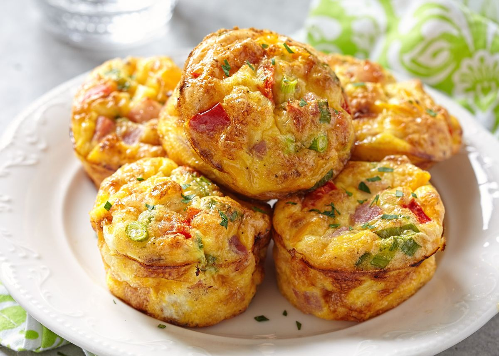
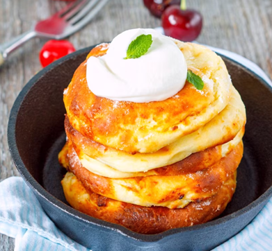
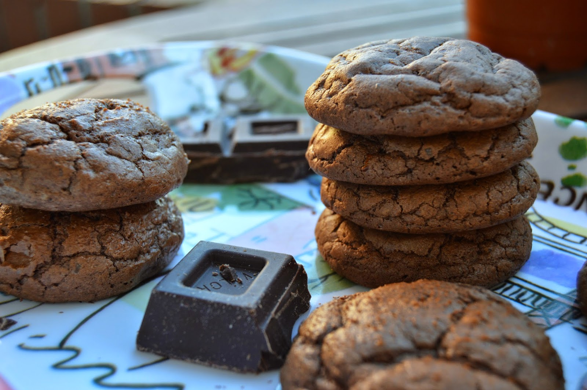

El Plato azul
Desayuno
Comida
Postres
INICIO
>
RECETAS
>
DESAYUNOS

Receta de muffins de verduras caseros

Receta de integrales con requeson
Imagen tortilla espinacas queso

Receta de galletas centeno
Receta de pan aguacate